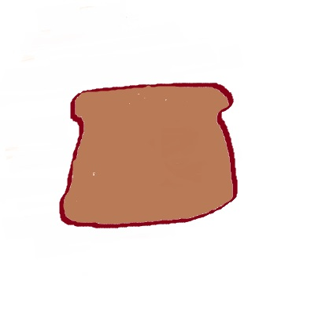

Toast
Bread, improved in every conceivable way.

Directions
- In a pan larger than the surface area of your bread, heat the pan up to medium high and melt some butter.
- Cook the bread for 30 seconds to a minute and flip. Repeat until both sides are toasted to your preference.
Home